HMH — Águas Profundas
01 · Superfície · 0 m · 0 m
Operação de superfície (topsides)
Sonda de perfuração offshore operando na superfície. Em destaque, os equipamentos de topside da HMH: derrick, top drive, roughneck, drawworks, bombas de lama e guindastes de manuseio.
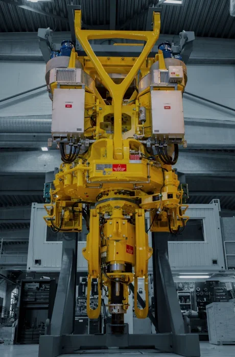
MH Top Drive
Içamento e rotaçãoGira a coluna de perfuração a partir do topo do mastro e sustenta o peso da coluna durante as manobras. hmhw.com ↗
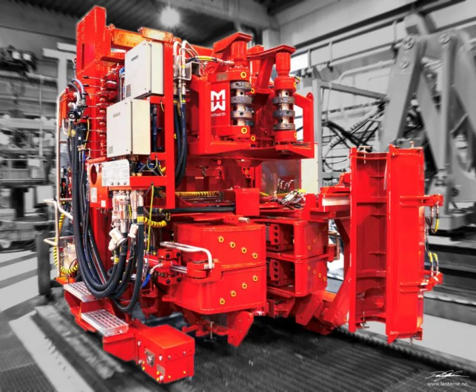
Bulldog™ Iron Roughneck
Manuseio de tubosRoughneck automatizado que aperta e desaperta as conexões dos tubos no piso da sonda, com rapidez e repetibilidade. hmhw.com ↗
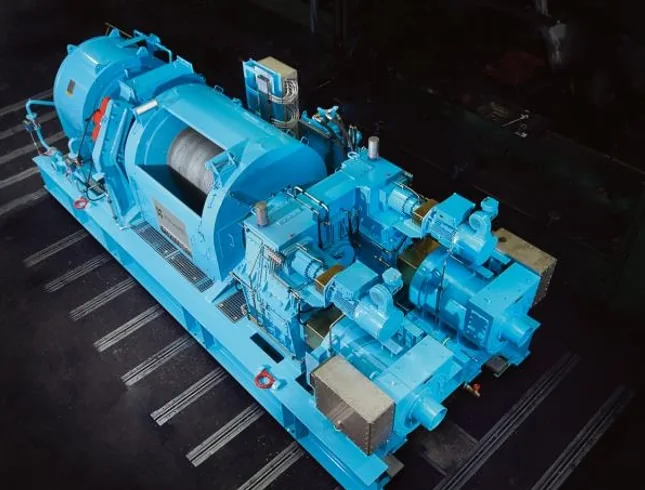
Wirth™ Drawworks
Içamento e rotaçãoGuincho principal que iça e abaixa a coluna de perfuração. hmhw.com ↗
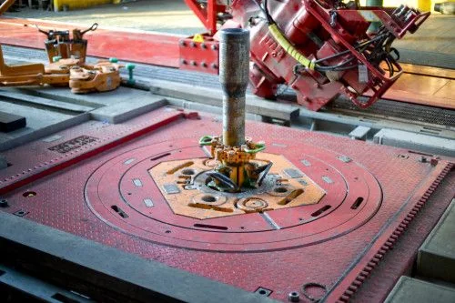
Wirth™ Rotary Table
Içamento e rotaçãoMesa rotativa no centro do piso: transmite torque e apoia a coluna durante as conexões. hmhw.com ↗
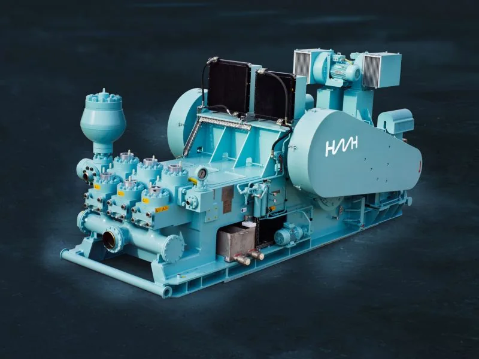
Wirth™ TPK Mud Pumps
Fluido de perfuraçãoBombas de alta pressão que circulam o fluido de perfuração até a broca e de volta à superfície. hmhw.com ↗
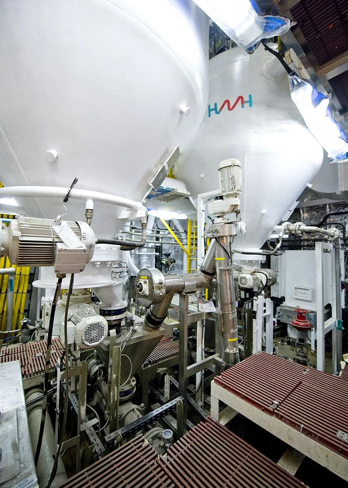
HMH Mud Systems
Fluido de perfuraçãoPeneiras, tanques e tratamento do fluido de perfuração que retorna do poço. hmhw.com ↗
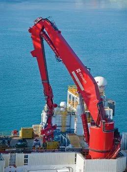
Guindastes e manuseio
Manuseio de tubosMovimentação de tubos, risers e cargas no convés. hmhw.com ↗
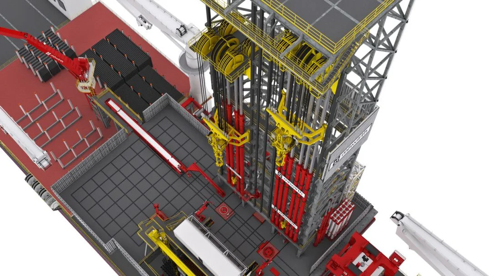
Derrick e subestrutura
EstruturasA torre e a subestrutura que sustentam todo o sistema de içamento. hmhw.com ↗
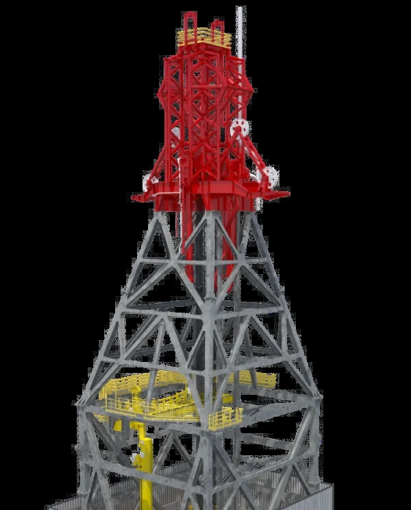
Compensação de movimento
CompensaçãoCompensa o balanço da embarcação para manter constante o peso sobre a broca. hmhw.com ↗
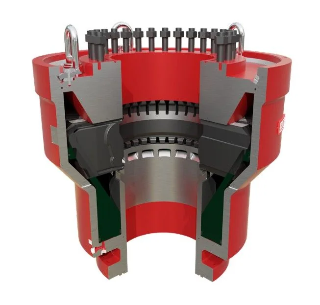
Diverter
Controle de pressãoDesvia o fluxo do poço para longe do piso da sonda em situações de gás raso. hmhw.com ↗
DEAL™ & CADS
AutomaçãoPlataforma de automação das sequências de perfuração, que recebe módulos de software inteligentes (Smart Modules). hmhw.com ↗
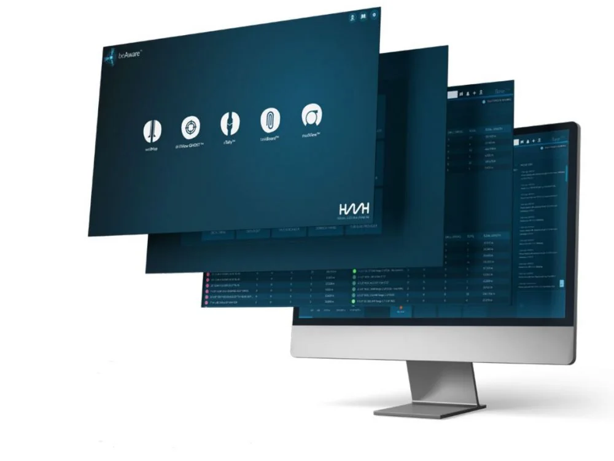
beAware™
DigitalizaçãoDados e monitoramento dos equipamentos da sonda para decisões mais rápidas. hmhw.com ↗
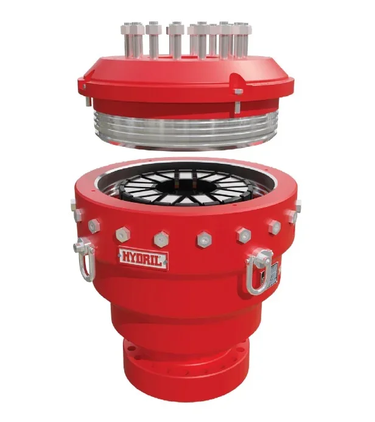
Hydril® GK™ 13-5
Controle de pressãoBOP anular compacto da linha Hydril (Radial Latch), em exposição no convés. hmhw.com ↗
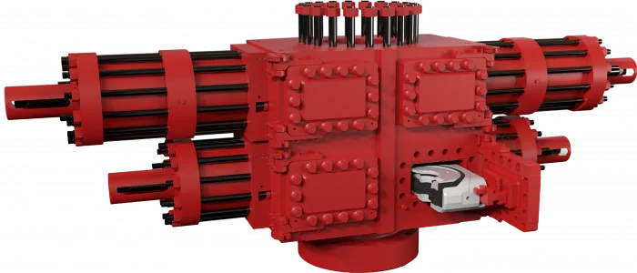
Hydril® Sentry RAM BOP
Controle de pressãoBOP de gaveta da linha Hydril, em exposição no convés. hmhw.com ↗
ESG Point
Drilling Lifecycle Services + vida útil dos equipamentos
Serviços para estender a vida útil dos equipamentos e maximizar o tempo de operação. O SmartCert oferece certificação API contínua para equipamentos de controle de pressão. Fonte ↗
HSSE: objetivo de zero dano Zero dano a pessoas e ao meio ambiente
A HMH trata HSSE como parte central da cultura: objetivo de zero dano a pessoas, ao meio ambiente e a ativos, e melhoria do desempenho ambiental pela gestão responsável dos aspectos ambientais. Fonte ↗
Inovação e digitalização Digital beAware™ · DEAL™
Investir em inovação e digitalização é um dos compromissos de sustentabilidade da HMH. Ferramentas como beAware™ e DEAL™ buscam mais eficiência operacional. Fonte ↗
Cadeia de suprimentos responsável Código de Conduta na cadeia
Fornecedores e subcontratados devem atuar conforme o Código de Conduta da HMH, com due diligence de direitos humanos no onboarding de parceiros. Fonte ↗
02 · Abaixo do casco · Logo abaixo da linha d’água
Sistema de tensionadores de riser
Abaixo da plataforma, os tensionadores de riser compensam o movimento das ondas, garantindo a estabilidade da coluna sob a superfície da água.
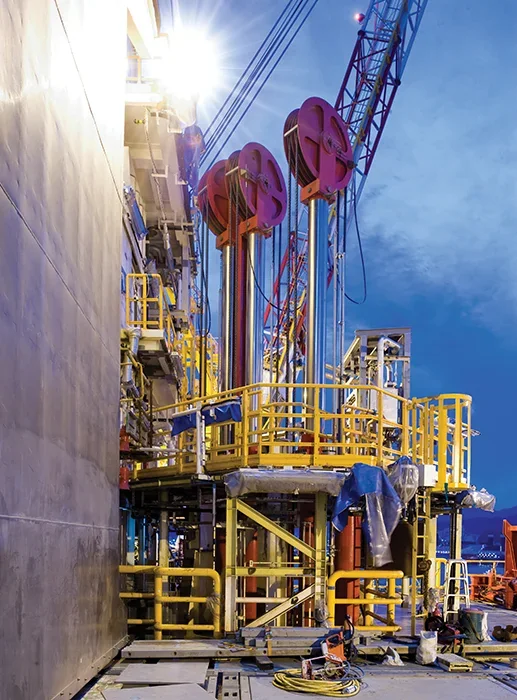
Tensionadores de riser
CompensaçãoCilindros hidráulicos que mantêm o riser tracionado enquanto o navio sobe e desce com as ondas. hmhw.com ↗
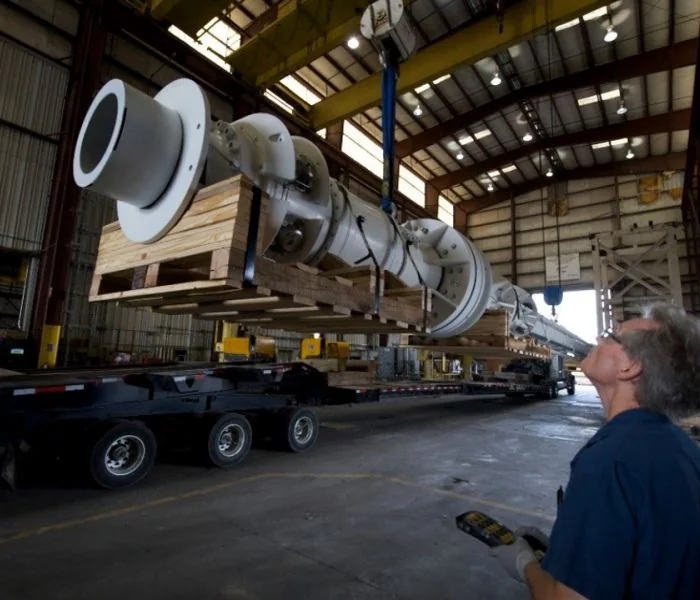
Junta telescópica
RiserPermite que o topo do riser deslize conforme o balanço do navio. hmhw.com ↗
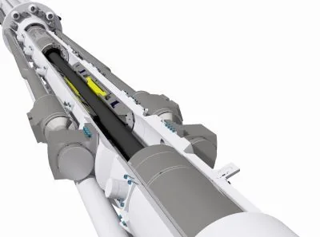
Sistema MPD
Controle de pressãoPerfuração com pressão gerenciada: controla com precisão a pressão no fundo do poço. hmhw.com ↗
ESG Point
MPD: mais controle, menos tempo de sonda 65% menos tempo de rig-up
O Integrated MPD Riser reduz o tempo de rig-up em até 65% e as paradas relacionadas ao MPD, com mais segurança operacional (dados da HMH). Fonte ↗
03 · Coluna d’água · Coluna d’água
Coluna de riser QTR™
A coluna de riser de perfuração estende-se pela coluna d’água, conectando a sonda ao poço de forma rápida e segura.
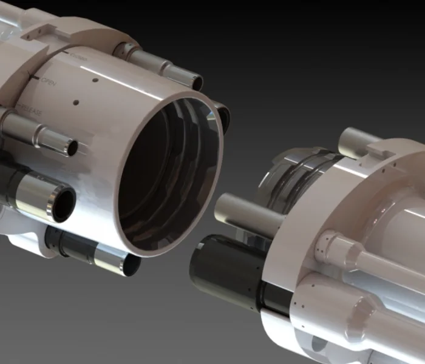
HMH QTR™ Marine Risers
RiserRisers QTR™ 4000LS e QTR™ 3500, com linhas auxiliares de choke, kill e hidráulica, ligando a sonda ao BOP. A linha inclui o HMF™ Riser e o Quick-Turn Riser Connector. hmhw.com ↗
ROV
ContextoVeículo operado remotamente que inspeciona o riser e opera equipamentos no fundo.
04 · Leito marinho · ~1.500 m · ~1.500 m
Leito marinho e BOP
No leito marinho, a coluna de riser se conecta ao BOP (Blowout Preventer) e ao sistema de cabeça de poço, garantindo o controle total da pressão.
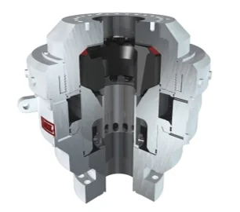
Hydril® GXP Annular BOP
Controle de pressãoBOP anular que veda em volta de qualquer tubular, com alta resistência a temperatura e a químicos. hmhw.com ↗
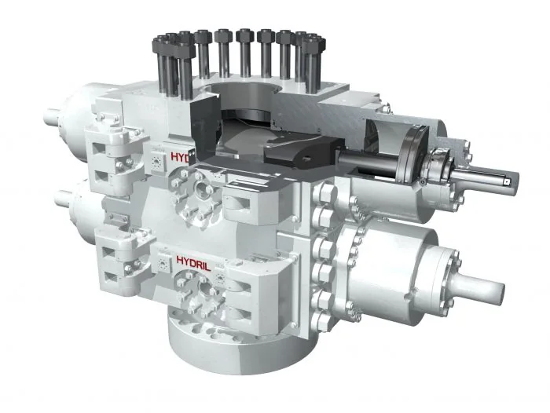
Hydril® Compact™ RAM BOP
Controle de pressãoGavetas que fecham e vedam o poço. No site da HMH: 18¾" para 15.000 psi. hmhw.com ↗
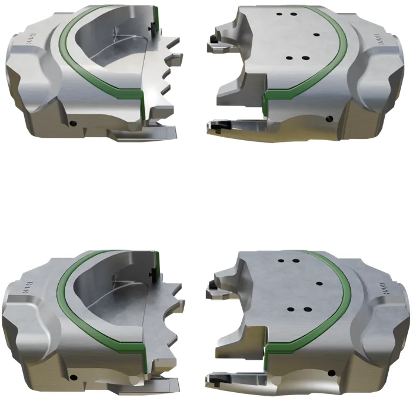
Gavetas cisalhantes WBSR-X
Controle de pressãoGavetas capazes de cortar a coluna e selar o poço nas condições mais severas. hmhw.com ↗
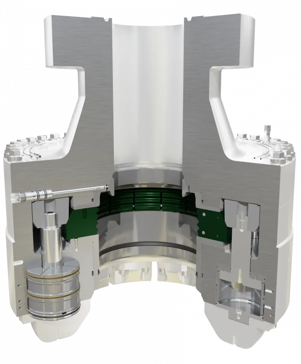
Vetco H-4 Connector
ConexãoConecta o conjunto de BOP à cabeça de poço. hmhw.com ↗
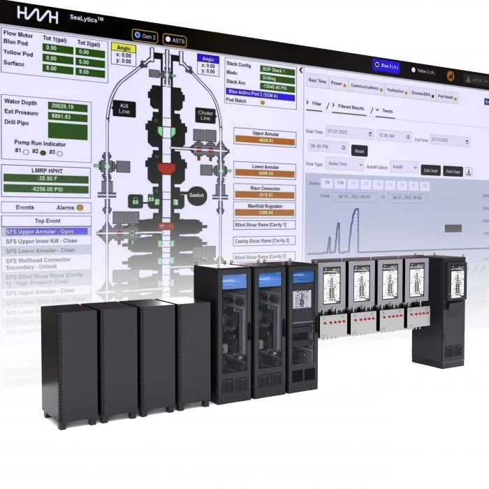
BOP Controls & Analytics
ControlePods de controle e análise de dados de cada função do BOP. hmhw.com ↗
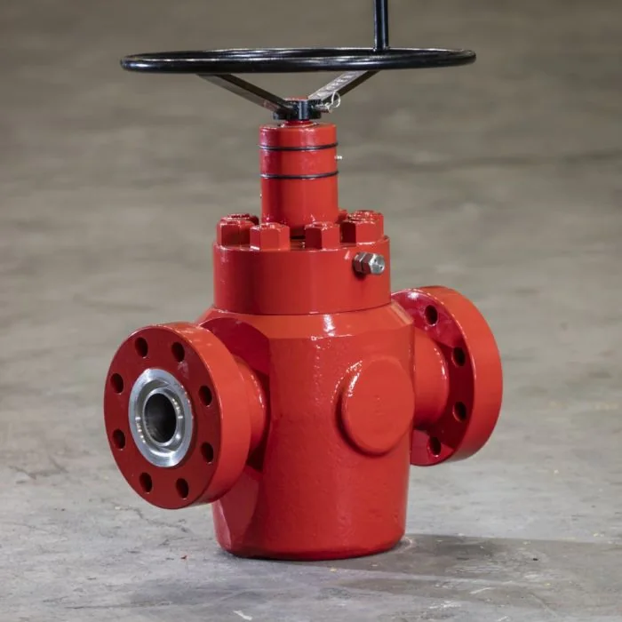
Válvulas e manifolds
Controle de pressãoVálvulas gaveta XTRM/TM e manifolds das linhas de choke e kill. hmhw.com ↗
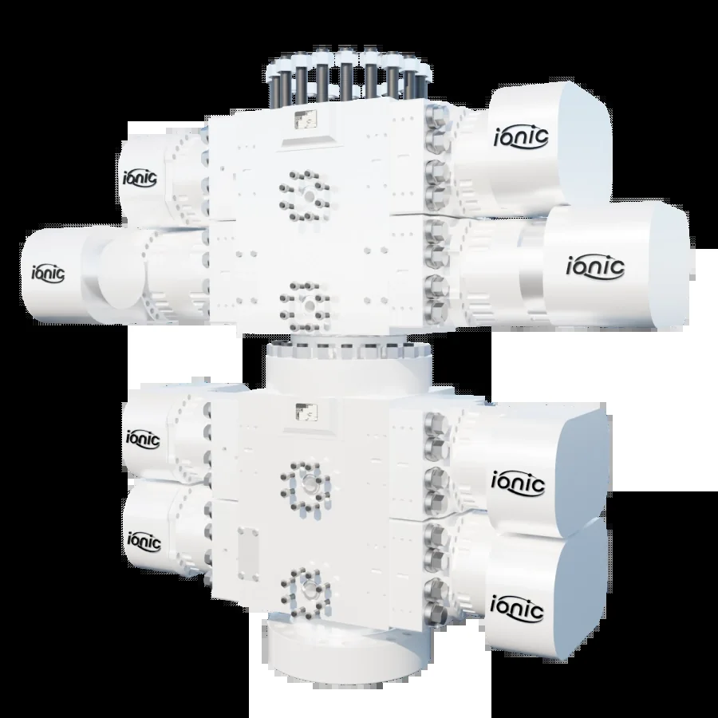
HMH ionic™ Electric BOP
Controle de pressãoBOP totalmente elétrico, para novos equipamentos ou conversão de BOPs existentes. hmhw.com ↗
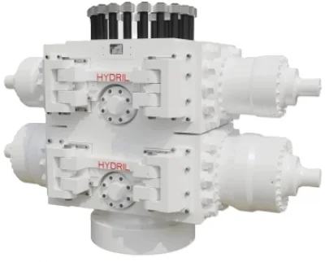
20k Subsea Drilling System
Controle de pressãoSistema de perfuração submarina para 20.000 psi. hmhw.com ↗
ROV
ContextoVeículo operado remotamente com câmeras e braços manipuladores.
ESG Point
ionic™ Electric BOP: zero emissões no subsea Zero emissões no subsea
Sem mistura de glicol/fluidos e sem ventilação de fluido de controle no fundo do mar. Pelo menos 75 t a menos de equipamento na superfície e um design mais leve, com menos custos e emissões de transporte, segundo a HMH. Fonte ↗
Controle de pressão como proteção ambiental Barreira de controle do poço
O conjunto de BOP mantém o poço sob controle. A HMH declara o compromisso de reduzir o risco de impacto ambiental adverso causado por seus produtos e operações. Fonte ↗
05 · Subsolo · ~1.500 a 3.500 m
Perfuração do poço (drilling)
Abaixo do leito marinho, a broca avança pelas camadas de rocha, guiada pela tecnologia de perfuração, abrindo o caminho com segurança.
Revestimentos e cimentação
ContextoColunas de aço cimentadas na rocha isolam o poço das formações.
Broca tricônica
ContextoCorta a rocha na ponta da coluna; o fluido bombeado pelas mud pumps traz os cascalhos para cima.
06 · Reservatório · ~4.500 m · ~4.500 m
Reservatório e produção
Alcançando o objetivo: o reservatório de óleo e gás. A perfuração segura é o primeiro passo da jornada de engenharia da HMH.
Reservatório
ContextoRocha porosa que armazena óleo e, no topo da estrutura, gás natural.
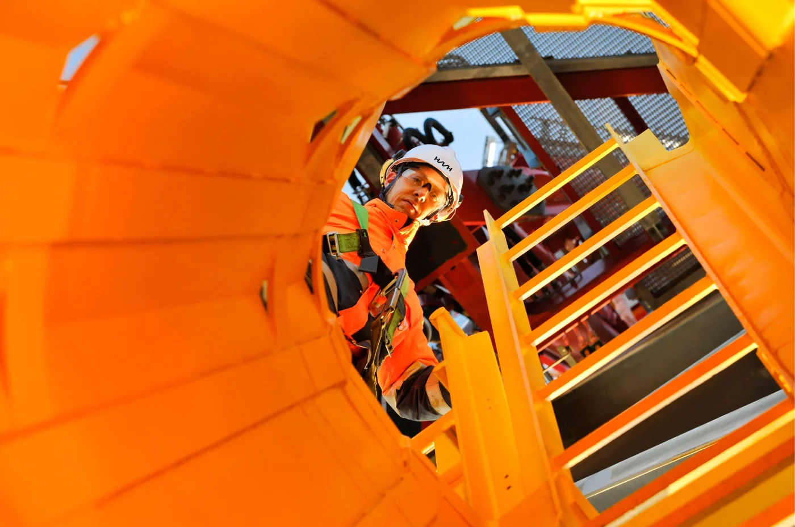
Drilling Lifecycle Services
ServiçosServiços da HMH ao longo de todo o ciclo de vida dos equipamentos de perfuração. hmhw.com ↗
ESG Point · HMH
Objetivos de Desenvolvimento Sustentável 5 · 8 · 12 · 13 ODS em foco
A HMH declara foco particular nos ODS 5 (igualdade de gênero), 8 (trabalho decente e crescimento econômico), 12 (consumo e produção responsáveis) e 13 (ação contra a mudança global do clima). Fonte ↗
Catálogo completo da HMH
Offshore
MH Mud Buckets
Manuseio de tubosBaldes de lama controlados remotamente que afastam a lama do piso da sonda durante manobras molhadas e desconexões, integrados aos sistemas anticolisão. hmhw.com ↗
Hydril Annular Packing Elements
Controle de pressãoElementos de vedação para os anulares Hydril, com elastômeros projetados para ambientes mais quentes, de maior pressão e mais ácidos. hmhw.com ↗
Other Offshore Rig Equipment
Controle de pressãoVálvulas Hydril Kellyguard, catheads, baldes de lama e outros equipamentos que completam uma sonda offshore. hmhw.com ↗
Other Offshore Pressure Control Equipment
Controle de pressãoVálvulas Hydril Kellyguard para uso como kelly cock superior, de top drive e inferior, válvula de segurança da coluna e mud saver. hmhw.com ↗
Valves & Manifolds
Controle de pressãoVálvulas e manifolds para intervenção em poços e aplicações de alta temperatura e alta pressão: XTRM, XDR, válvulas de retenção e manifolds. hmhw.com ↗
NT-2™ Connection System
ConexãoFamília de conectores projetada para segurança e instalação simples. Baseada no conector de cabeça de poço submarino H-4, usado desde 1989. hmhw.com ↗
Mud Systems (HP & LP)
Fluido de perfuraçãoSistemas de lama de alta e baixa pressão e todos os equipamentos necessários, herança da STEP Offshore: funis, agitadores e monitoramento do fluido em tempo real. hmhw.com ↗
Terra (onshore)
Hydril Annular Packing Elements · Onshore
Controle de pressãoMais de 150 compostos de elastômero proprietários, projetos em borracha natural e nitrílica e um novo composto HNBR com maior vida em fadiga e faixa de temperatura. hmhw.com ↗
Hydril Annular BOPs · Onshore
Controle de pressãoO melhor anular do mercado, de 7" a 18", de 3K a 15K. O GXP é o modelo mais avançado; o GK é amplamente usado há mais de 30 anos. hmhw.com ↗
Hydril RAM BOPs · Onshore
Controle de pressãoPreventores de gaveta Hydril Sentry e Compact para perfuração em superfície e workovers. Acionamento hidráulico, projeto simples e travas mecânicas externas. hmhw.com ↗
Hydril RAM Blocks · Onshore
Controle de pressãoLinha completa de gavetas para BOPs de superfície e submarinos. Vedam ao redor da coluna, ou a cisalham, para conter surtos inesperados do poço. hmhw.com ↗
MH™ Top Drives · Onshore
Içamento e rotaçãoSéries de top drives TD, PTD e DDM com o maior torque da categoria, compactas e modulares, para ambientes do ártico ao deserto. hmhw.com ↗
Wirth Rotary Tables · Onshore
Içamento e rotaçãoMesas rotativas que giram a coluna e suportam seu peso nas conexões. Servem de reserva ao top drive; há modelos com acionamento elétrico. hmhw.com ↗
Pyramid™ Mast and Sub Structures
EstruturasMastros e subestruturas conforme a sua especificação, com herança de mais de 1.000 mastros e torres Pyramid desde 1956. hmhw.com ↗
Wirth Mud Pumps · Onshore
Fluido de perfuraçãoDesde 1904, bombas de lama projetadas para reduzir desgaste, paradas e custo de manutenção. A usinagem precisa dispensa calços. hmhw.com ↗
Bulldog™ Roughnecks for Land Rigs
Manuseio de tubosChaves de tubos automatizadas Bulldog BD120 e BD160, que se integram aos sistemas de automação já existentes na sonda. hmhw.com ↗
Bulldog™ Power Slips
Manuseio de tubosCunhas automáticas com projeto em 3 peças para remoção e instalação rápidas na mesa rotativa, integráveis às chaves de tubos Bulldog. hmhw.com ↗
Drilling Catwalks
Manuseio de tubosSérie modular DC440 (unidade simples, dupla e tripla) com capacidade de 16.000 lb e tubos de até 24", além do DC1200. hmhw.com ↗
Service Catwalks
Manuseio de tubosManuseio de tubos sem as mãos para sondas de serviço. O SC800 tem batedores hidráulicos, indexadores, skate e autonivelamento. hmhw.com ↗
Other Onshore Rig Equipment
Içamento e rotaçãoMoitão e bloco da coroa, âncora da linha morta, tambor da linha de perfuração, manuseio de tubos, catheads hidráulicos, swivels, misturadores cáusticos e mais. hmhw.com ↗
Wirth Drawworks · Onshore
Içamento e rotaçãoSistemas de perfuração sob medida para sondas terrestres de petróleo, gás e geotermia, da "linha clássica" padronizada a projetos para ambientes severos. hmhw.com ↗
Serviços e digital
SeaLytics™ BOP Advisor
DigitalizaçãoDados e análises do SeaLytics 3.0 BOP Advisor reduzem o tempo não produtivo e aumentam a segurança, sem elevar manutenção ou custo de serviço. hmhw.com ↗
SmartCERT™
ServiçosPrograma global e contínuo de certificação API para equipamentos de controle de pressão, baseado em inspeções durante a manutenção e em dados de operação. hmhw.com ↗
DrillCon
ServiçosOtimização de manutenção: programas de manutenção baseada em condição, que combinam monitoramento orientado a dados com análise de vibração e de óleo. hmhw.com ↗
RiCon™ & drillCERT
ServiçosServiços de manutenção baseada em condição para risers de perfuração, usando dados do sistema de monitoramento da sonda. hmhw.com ↗
Optimization Services
ServiçosServiços baseados em processo que usam dados e análises de alta qualidade para melhorar a eficiência e o custo da perfuração. hmhw.com ↗
DRILLPerform™
ServiçosProcesso de melhoria contínua, feito junto ao cliente e movido por análise de dados, para extrair o máximo do ativo instalado e dos Smart Modules. hmhw.com ↗
Smart Modules
AutomaçãodrillersAssist, EKD, Soft Torque-Z e optiWOB: módulos inteligentes projetados para melhorar as operações de perfuração. hmhw.com ↗
Drilling Control System Upgrades
AutomaçãoAtualizações de hardware e software que tratam obsolescência de componentes, padrões atuais de cibersegurança e novos recursos digitais para operação 24/7. hmhw.com ↗
Cyber Security
DigitalizaçãoSoluções de cibersegurança para sondas: arquitetura virtual e física, backup, gestão de ameaças e recuperação de desastres. hmhw.com ↗
myDrilling™
DigitalizaçãoPlataforma web interativa para clientes, com visão geral da correspondência, dos pedidos e dos boletins em andamento. hmhw.com ↗
engageDrilling™
DigitalizaçãoContratos de serviço (CSAs) com análise preditiva, especialização e certificação contínua para melhorar a disponibilidade do BOP. hmhw.com ↗
HMHConnect
DigitalizaçãoO portal de experiência do cliente que substitui o engageDrilling e o myDrilling por um único site, mais simples. hmhw.com ↗
HMHConnect Shop
Peças e suporteA plataforma oficial de comércio eletrônico da HMH para peças OEM: disponibilidade, prazos, preços, cotações e pedidos oficiais em um só lugar. hmhw.com ↗
HMHDirect
Peças e suporteLoja online de peças OEM originais, incluindo elementos de vedação, selos e packers Hydril, pensada para clientes em terra. hmhw.com ↗
Spare Parts
Peças e suporteFornecimento regional de peças OEM, com estoque em várias partes do mundo para manter as sondas em operação. hmhw.com ↗
Support Services
Peças e suporteEspecialistas técnicos e resposta rápida, com gerentes de conta de serviço dedicados para comunicação direta. hmhw.com ↗
Global Support Center
Peças e suporteSuporte técnico 24 horas: atendimento de primeira linha para problemas críticos e uma central 24/7 com diagnóstico remoto e busca de falhas. hmhw.com ↗
Overhaul, Installation and Commissioning
ServiçosInstalação e comissionamento, certificações, manutenção em todos os níveis, boletins de produto e oportunidades de atualização. hmhw.com ↗
Training
TreinamentoCursos específicos por cliente e linha de produto, sobre uma base instrutiva sólida, em sala de aula, e-learning e no local. hmhw.com ↗
Mineração e construção
Mining Equipment
Mineração e construçãoPacotes completos e um portfólio amplo para a mineração submarina e a mineração em terra. hmhw.com ↗
Subsea Mining
Mineração e construçãoTecnologias para explorar e extrair recursos do fundo do mar, com mais de 30 anos de mineração offshore de diamantes por perfuração airlift. hmhw.com ↗
Wirth Slurry Pumps
Fluido de perfuraçãoBombas de lama de pistão com diafragma fabricadas há mais de 60 anos, com potências de até 3.000 kW para todo tipo de aplicação com slurry. hmhw.com ↗
Construction Equipment
Mineração e construçãoPortfólio amplo para construção, como as perfuratrizes de topo de estaca (PBA) para fundações em terra e no mar. hmhw.com ↗
RCD Rigs & Pile Top Drill Rigs
Mineração e construçãoSistemas de topo de estaca confiáveis para perfuração de fundações em terra e no mar, com eficiência de custo e alto desempenho. hmhw.com ↗